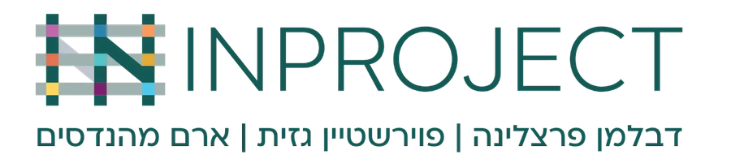
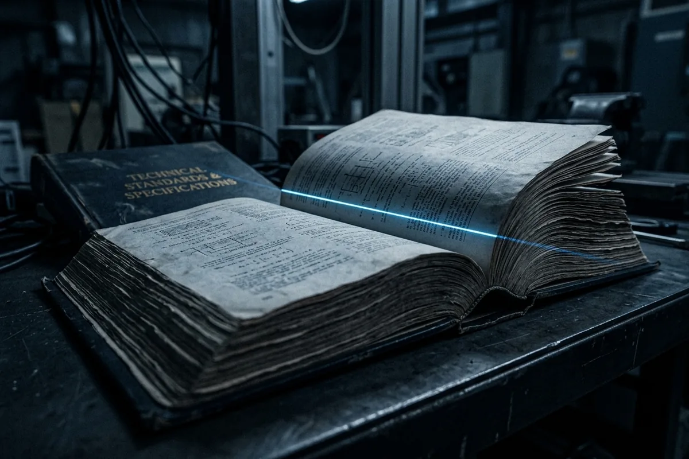
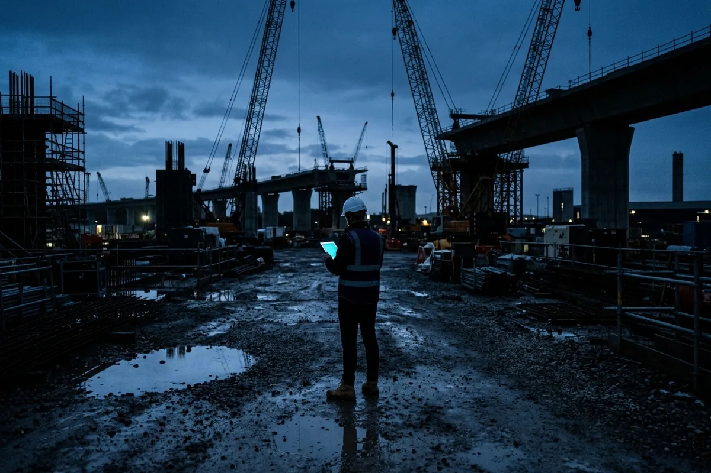
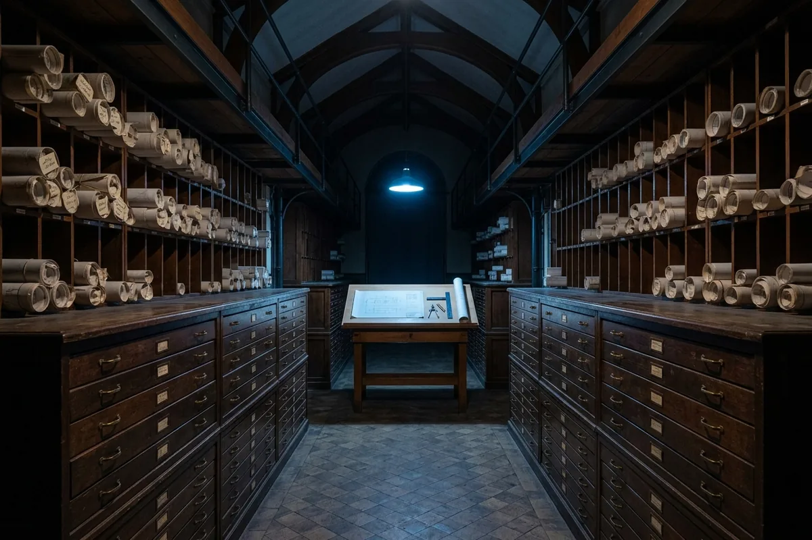
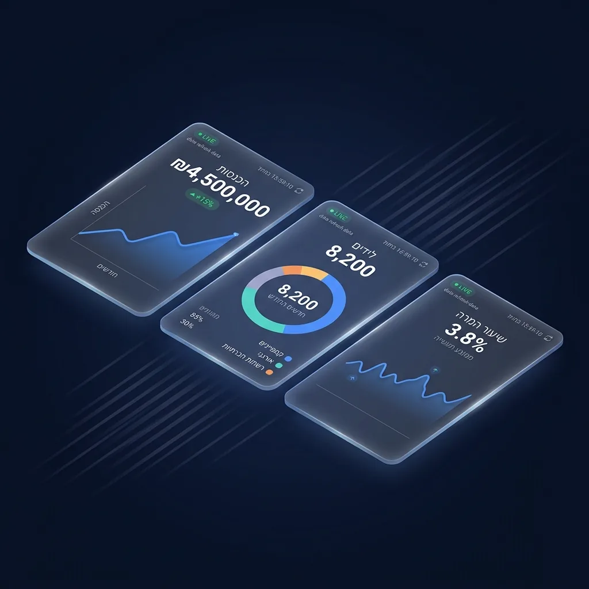
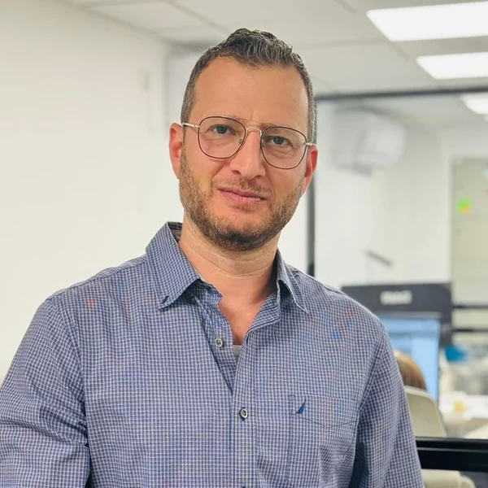
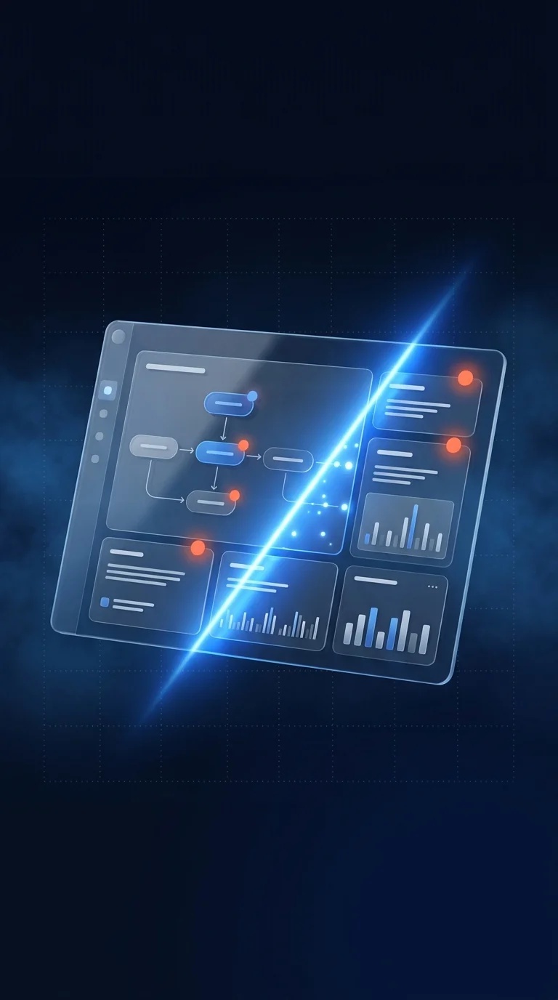
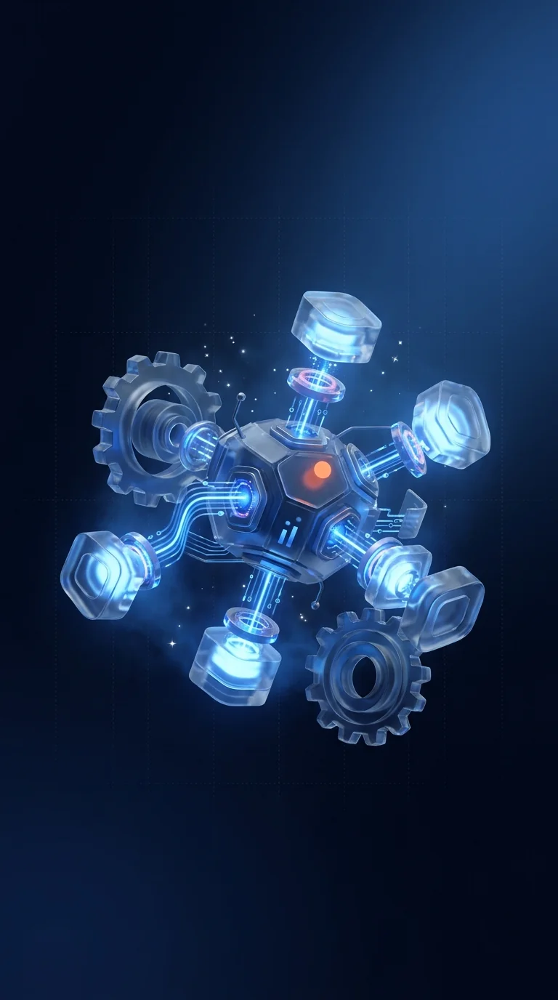
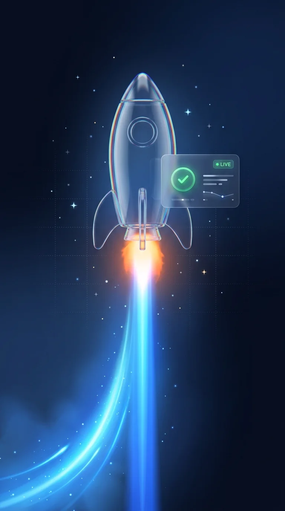

×

המערכות מכסות את מה שמסודר.
השאלה היא מי מטפל בכל השאר.
תיק מכרז שנכתב מחדש. מייל מרשות שמישהו צריך לזכור. דיווח שהגיע מהשטח בוואטסאפ. ותשובה שיושבת בראש של מהנדס אחד. זה לא מסודר — ולכן אין לזה מוצר מדף.

חמישה מקומות שבהם שעות של מהנדסים בכירים הולכות על עבודה חוזרת
אלה תצפיות מבחוץ, לא אבחנות. כל אחת מהן היא שאלה שנשמח לשמוע עליה תשובה.
הפקת תיק מכרז
חוזים, מפרטים וכתבי כמויות נבנים מחדש בכל פרויקט, על בסיס גרסאות קודמות שמישהו צריך לזכור איפה הן.

התאמה למפרטים
מפרט הדרישות הכלליות של נת"ע לעבודות קבלניות הוא מעל מאתיים עמודים. בדיקת התאמה אליו נעשית היום בעיניים.
התנהלות מול רשויות
תיקי היתר, סבבי הערות וטופס 4 — מול עשרות רשויות, לכל אחת דרישות ונהלים משלה.

דיווח מהשטח
בפרויקט תשתית של חצי מיליארד שקל, האתגר שדווח במפורש היה איסוף המידע מספקים ומקבלני משנה.

הידע שאחרי המיזוג
שלוש חברות ותיקות שהתמזגו, שלושה סניפים. חלק גדול מהידע המקצועי עדיין יושב בראש של אנשים, לא במערכת.

תמונת הנהלה
עשרות פרויקטים במקביל, בארבע חטיבות ובשלושה סניפים. תמונת מצב חוצת-פרויקטים מורכבת היום מדיווחים.
הנדסה וניהול לפיתוח — ואגף AI שנבנה מתוכם
E.N.G Holdings — "Eilat New Generation" — חברת הנדסה וניהול לפיתוח, שצמחה באילת ופועלת בכל הארץ. אנחנו מלווים פרויקטים מורכבים מטרום-ייזום ועד מסירה, מתוך ניסיון של שנים מול רשויות, מינהלות וגופים ציבוריים. simplifAI הוא אגף ה-AI שצמח מתוך העבודה הזו — לא ספק טכנולוגיה שהגיע מבחוץ ולמד את התחום מהצד.

- לשעבר ראש מינהלת הסכם הגג ופיתוח העיר אילת
- סמנכ״ל ומ״מ מנכ״ל החברה הכלכלית לאילת
- חבר הנהלה ומבקר פנימי · רשת ישרוטל
- ממייסדי חברת התוכנה SmartSchool
- מעל 20 שנות ניהול בפועל של עסקים ומערכות
- מנהל מערכות ואוטומציה · E.N.G Holdings ו-ב.ס מהנדסים
- לשעבר מנכ״ל פארק תמנע
- רקע במדידות הנדסיות ובעבודה עם AutoCAD
תחומי מומחיות שחופפים לעולם שלכם
מה שמסודר — כבר פתור.
הפער הוא במה שלא.
אנחנו לא באים להחליף מערכות שעובדות. אם יש אצלכם מערכת לבקרת איכות ולניהול בדיקות — היא עושה את שלה, ואין שום סיבה לגעת בה — אלא אם אתם לא מרוצים ממנה.
המובנה
- בדיקות איכות לפי צ׳ק-ליסט מוגדר
- דוחות ליקויים ומעקב תיקון
- תוצאות מעבדה מול תקן
- טפסים ותיקי מסירה
- לוחות זמנים וגאנט
הלא-מובנה
- מסמך שנכתב מחדש במקום להיבנות מתבנית
- התכתבות מול רשות שאף אחד לא סוגר
- מפרט של מאות עמודים שצריך לבדוק מולו
- דיווח שהגיע כהודעה, כתמונה או כשיחה
- ידע מקצועי שיושב אצל אדם אחד
בדיקת מסמך מול כלל ידוע היא בדיוק מה
שהטכנולוגיה הזאת עושה היום הכי טוב.
מערכת שרצה במשרד הנדסה אמיתי
לא אב-טיפוס ולא מצגת. מערכת ניהול פרויקטים שנבנתה עבור E.N.G Holdings, שהעובדים שלה עובדים בה כל יום.
כל מה שקשור לפרויקט אחד יושב בפרויקט. כל מה שההנהלה צריכה לראות מגיע אליה.
- תבניות צ׳ק-ליסט — מגדירים פעם אחת, וכל פרויקט חדש נולד איתן
- ציר זמן חוצה-פרויקטים — כל הפרויקטים על תמונה אחת, לא בדוח שמישהו הכין
- תקציב וגבייה על הפרויקט — לא במערכת נפרדת ומנותקת
- ספקים ולקוחות — התקשרויות, מחירונים והיסטוריה במקום אחד
- מסמכים מקושרים למשימה — לא תיקייה שצריך לחפש בה
- התראות שמגיעות למנהל — במקום לרדוף אחרי דיווחים
מתחילים בתהליך אחד, לא בארגון שלם
הדרך שאנחנו עובדים בה היא לבחור תהליך יחיד שכואב, להוכיח עליו ערך תוך שבועות, ורק אז להחליט אם ואיך מרחיבים. אם לא הוכח ערך — עצרנו, והפסדתם מעט מאוד.

לבחור תהליך אחד
לא "מערכת לארגון". תהליך אחד מדיד שחוזר על עצמו הרבה, ושאפשר למדוד עליו זמן ועלות.

לבנות עליו
בונים על התהליך האמיתי שלכם, לא על תבנית גנרית, ומחברים למה שכבר קיים במקום להחליף אותו.

למדוד ולהחליט
משווים לזמן ולעלות שהיו קודם. המספר הזה הוא שמחליט אם ממשיכים — לא הרושם.
אותה שיטה, בקנה מידה של קבוצה
מה שעובד על תהליך אחד ב-INPROJECT הוא אותו דפוס בדיוק בכל מקום שבו מסמכים, כללים ותהליכים חוזרים על עצמם בהיקף. זה נכון לכל ארגון בקבוצה.
נתחיל בשיחה.
המסמך הזה הוא תצפיות מבחוץ, ובכוונה אין בו מחיר ואין בו הצעה. הצעד הנכון הוא שיחה קצרה שבסופה נדע אם יש כאן התאמה אמיתית — ואם אין, גם זו תשובה טובה.